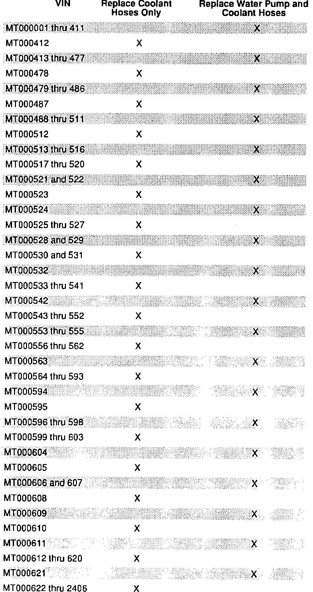
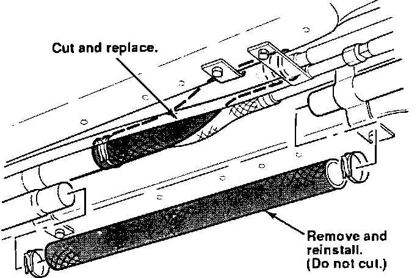
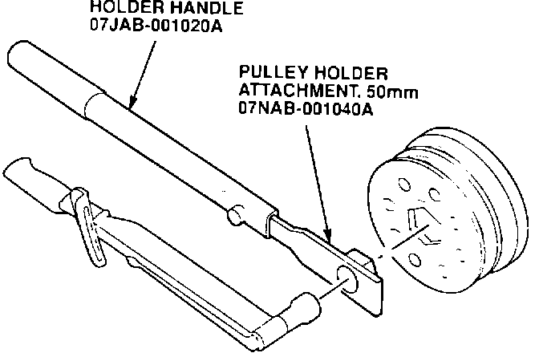
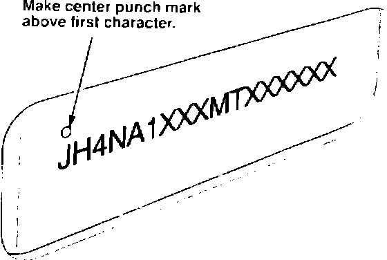

Campaign - Coolant Hoses May Rupture
BULLETIN NO.92-030
YEAR
1991
MODEL
NSX
VIN APPLICATION
THRU VIN
JH4NA1...MT002406
October 27, 1992
Product Update:
NSX Cooling System
PROBLEM
One of the engine coolant hoses can soften over time and may eventually rupture. The waterpump shaft seal on some early VINs may seep coolant.
CUSTOMER NOTIFICATION
Owners of affected vehicles will be contacted by mail and asked to take the car to a dealership for repair. The text of the customer letter is at the end of this service bulletin.
PARTS INFORMATION
Coolant hose kit P/N 06195-PR7-A00
Water pump (with O-ring) P/N 19200-PR7-A01
Water pump mounting bolt,
6 x1.0 mm (7 required) P/N 95701-06022-08
Water pump mounting bolt,
8 x1.25 mm (2 required) P/N 95701-08025-08
CORRECTIVE ACTION
All affected vehicles require replacement of the cooling system hoses with new hoses from the kit listed under PARTS INFORMATION.

A few cars require the installation of a new waterpump. Compare the VIN of the vehicle to the chart in this bulletin; if called for, replace the water pump with a new unit listed under PARTS INFORMATION.
1. Drain the cooling system. Collect the coolant in a clean container. (See service manual page 10-5.)
2. Carefully remove the lower coolant hose in the shift linkage tunnel. Do not damage this hose, it will be reused.

3. Remove the upper coolant hose and install a new hose from the kit.
NOTE:
When removing a hose, carefully slit the end with a razor blade so you can remove the hose without damaging the aluminum pipe. Do not scratch the pipe with the razor blade, it may cause a leak.
4. Reinstall the lower coolant hose.
5. Remove the expansion tank. If you are not replacing the water pump, go to step 7.

6. Water pump replacement only. Follow the timing belt removal and water pump replacement, procedures on service manual pages 6-23 and 10-11. When installing the crankshaft pulley, apply engine oil to the bolt threads and the shoulder/washer mating surface. Use the special tools as shown to torque the pulley bolt to 250 N-m (25 kg-m. 181 lb.ft.).
NOTE:
Do not follow the procedure in the service manual for torquing-loosening-retorquing the bolt.
7. Slit and remove the two large engine coolant hoses. Replace them with new hoses from the kit.
8. Install the expansion tank.
9. Refill and bleed the cooling system. Refer to service manual page 10-7.

10. Center-punch a completion mark above the first character of the engine compartment VIN.
WARRANTY CLAIM INFORMATION
In all cases, file a warranty claim for the replacement of the coolant hoses.
If the vehicle needs a new water pump installed (see VIN chart), file a second warranty claim for that operation.
Replace Coolant Hoses, Refill and Bleed System:
Operation number:
113110
Flat rate time:
2.0 hours
Failed part number:
06195-PR7-A00
Defect code:
646
Contention code:
J60
Replace Water Pump:
Operation number:
113120
Flat rate time:
3.3 hours
Failed part number:
19200-PR7-A01
Defect code:
647
Contention code:
J61
Product Update:
Cooling System Hoses
Dear NSX Owner:
Some 1991 NSX's were produced with an engine cooling system hose that may soften and rupture, causing rapid loss of the coolant. If this happens, the engine can overheat almost immediately and you will need to have your car flatbedded to an Acura dealer for repair. Our records show that your NSX is one of those affected.
Improved coolant hoses are now available. Please call your dealer and make an appointment to have them installed on your NSX. This update will be done free of charge.
A few cars produced early in the 1991 model year require replacement of the water pump as part of this update. The improved water pump prevents coolant seepage. Your dealer can advise you when you call for the appointment whether your car needs this extra work.
We apologize for any inconvenience this product update may cause you; however, our main concern is your continued trouble-free enjoyment of your NSX.